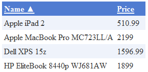

BasicDataGrid
The BasicDataGrid control displays items from a data source in a customizable table. Automatically provides paging and ordering support. You can use the standard Visual Studio DataGrid designer to set up the BasicDataGrid's style and behavior.
You can use the BasicDataGrid with any bindable data source — not only Kentico data and objects.
Derived from: ASP.NET DataGrid
Tip: If you want to display pages from Kentico in a grid, you can use the CMSDataGrid control, which has built-in support for loading Kentico pages.
Getting started
The following is a step-by-step tutorial that shows how to use the BasicDataGrid control to display a table containing laptops (CMS.Laptop pages) from the sample Corporate Site:
Create a new Web form somewhere in your web project.
Switch to the Design tab and drag a BasicDataGrid control from the toolbox onto the form.
Right-click the BasicDataGrid on the form, select Auto Format... and choose a scheme.
Right-click the BasicDataGrid on the form, select Show Smart Tag and then Property Builder.
The BasicDataGrid1 Properties dialog opens.
On the General tab, check Allow sorting.
Switch to the Columns tab and uncheck Create columns automatically at run time.
Add a new Bound Column from the Available columns list to the Selected columns list. Enter the following values into the appropriate fields:
Header text: Name
Data Field: DocumentSKUName
Sort expression: DocumentSKUName
Add another Bound column. Enter the following values in the appropriate fields:
Header text: Price
Data Field: SKUPrice
Sort expression: SKUPrice
Click OK.
Switch to the web form's code behind and add the following references to the beginning of the code:
usingSystem.Data;usingCMS.DocumentEngine;Add the following code to the Page_Load method:
// Retrieves all CMS.Laptop pages from the Kentico database as a DataSetDataSet ds = DocumentHelper.GetDocuments("CMS.Laptop").Path("/", PathTypeEnum.Children).OrderBy("DocumentSKUName");// Assigns the DataSet as the data source of the BasicDataGrid controlBasicDataGrid1.DataSource = ds;BasicDataGrid1.DataBind();Save the changes to the web form and its code behind file.
Right-click the web form in the Solution explorer and select View in Browser.
The resulting page displays a table similar to the following (depending on the chosen scheme):

Configuration
You can set the following properties for the BasicDataGrid control:
|
Property name |
Description |
Sample value |
|
DataBindByDefault |
Indicates whether the control automatically performs data binding during the Init event. |
|
|
HideControlForZeroRows |
Indicates whether the control should be hidden when no data is loaded. The default value is False. |
|
|
ProcessSorting |
Indicates whether the control processes the grid sorting in the DataView instead of on the SQL level. |
|
|
RelatedData |
Custom data connected to the object. |
|
|
SetFirstPageAfterSortChange |
Indicates if the page index resets to the first page when sorting is changed. |
|
|
SortAscending |
Indicates whether the grid sorting is in ascending order. The default value is True. |
|
|
SortField |
Gets or sets the sort field. Allows you to set the default sort field. |
"NewsReleaseDate" |
|
ZeroRowsText |
Text shown if no records are found. This text is not visible when the control is hidden by the HideControlForZeroRows property. |
"No records found" |
Note: The BasicDataGrid inherits from the ASP.NET DataGrid control, so you can also set any of the base properties.
Appearance and styling
You can modify the appearance of the BasicDataGrid control by setting the standard properties inherited from the ASP.NET DataGrid control.
A common way to set the appearance of DataGrid controls is to assign a skin through the SkinID property. You can define skins in .skin files under individual themes in the App_Themes folder. See the .NET Skins and Themes documentation for more information.